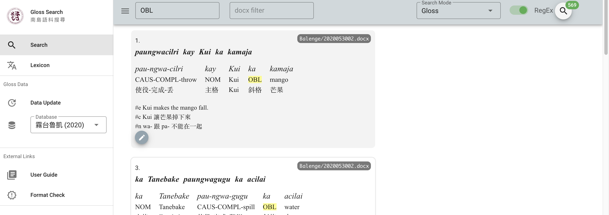

Glossing
Glossing is part and parcel in linguistics. Part of our training is learning to represent linguistic data in a format that can be understood by all. An example can be found in below, taken from the Leipzig Glossing Rules. In general, morphemes should correspond, being marked by a hyphen or space to separate them, depending on boundedness. The details are highly dependent on your subfield and your audience. For instance, ‘1PL’ (first plural pronoun) could also be represented by ‘we’ in certain contexts. On other occasions, categories of the language you’re studying are not included in the standard Leipzig Glossing Rules set, e.g., ‘ideophone’ can be represented by IDEO, IDPH, etc. There’s also recent advances in the glossing standards of, for instance, ancient languages, like this paper by DiBiase et al. for Ancient Egyptian; it’s worth a read. (Bonus: check out the article on Kanbun which provides a short intro to how the Japanese marked up Classical Chinese to make sense of it.)
original: My s Marko poexa-l-i avtobus-om v Peredelkino.
morphemes: 1PL COM Marko go-PST-PL bus-INS ALL Peredelkino
free translation: 'Marko and I went to Perdelkino by bus.'Yami
Yesterday, my partner CJ Young (UCSB), who is working with Yami (Tao) data and has been pushed somewhat aggresively by me to adopt R and Rmarkdown gradually easing into the R ecoverse, raised an interesting question: how can I turn my fieldwork glosses into a corpus that’s easily searchable? Just to clarify things, in his fieldwork he’s following a format that rests on splitting recordings into intonation units with the goal of depositing data in the Corpus of Formosan Languages. However, the data is not in that corpus yet, and mostly written down in .pages (the word of mac os). The usage of .pages is not a requirement, but just a consequence of him working together with Greg Vondiziano (UH) and their both having macbooks ha.
A typical gloss looks like this:
1.
ko ononongan a kavavatanen ya am,
ko ononong-an a ka-va~vata-nen ya am
1SG.GEN narrate-LV LK NMZ-RDPL~hearsay-PV DEM.PROX TOP
1SG.屬格 述說-處焦 繫詞 名物化-重疊～據說-受焦 指示.近距 主題
ko nimacita do
ko ni-ma-cita do
1SG.GEN PFV-PV.able-see LOC
1SG.屬格 完成貌-受焦.能力-看 處格
2.
paciracirayin an
pa-cira~ciray-in an
CAU-RDPL~light-PV FP
使役-重疊～照亮-受焦 語助詞
#e The story I’m going to tell is what I saw in a movie
#c 我要說的故事是，我在電影上看到的
#n paciracirayin = 電影; ciray = 亮; cirayin = 照So first there is the gloss number, followed by the original sentence, then an extra level containing the underlying form, then the morphemic glosses in English, in Chinese, and then a free translation of a considerable translation in English (#e) as well as Chinese (#c), and possibly some notes (#n). You can see that there is some structure in the order of these items. But there are also a few annoying things: the first intonation unit has a very long line, which has been split in two (starting with ko); and the translations in #e and #c are metioned for intonation unit 2, but actually also relate to intonation unit 1.
Ideally, corpora become more machine-searchable if they are further standardized. So, I tried to put my head to it and this is what I came up (taking full inspiration from the ASBC corpus used in my PhD dissertation):
- .txt source files (because lightweight and cross-platform)
- script to turn them into dataframe, enabling the powerfull search functions of R (or python)
So the goal is to transform the previous into a table with the following columns:
- intonation unit number *surface
- underlying
- english morphemes
- chinese morphemes
- english translation
- chinese trans
- notes
Preprocessing
As always, I started out with making a github repository, to detail the different steps. Next I thought about we were going to get from the source text in .pages to .txt to dataframe. In the preprocessing stages, there are about five things that needed to be checked (manually, just to make sure).
- Copy into a txt document. Yes, this is easy.
- Replace
with . In a text editor like Atom or even the general text editor on your computer, you can generally replace \t(tab) with\s(space) if regular expressions are enabled. - Check all multi line glosses on one line. This needs to be checked manually, just to make sure.
- Add the following. You need to tag the lines, they can be in different orders (maybe one document has the Chinese line before the English line), but they need to be identified. Ideally this can be done programmatically, but better safe with manual than sorry with computational.
- ‘s’ to surface line
- ‘u’ to underlying line
- ‘e’ to English gloss
- ‘z’ to Chinese gloss
- Replace all
\n\n+with\n. This regular expression will delete empty lines.
Should people be reading this and have tips on to make this more efficient, always welcome.
UPDATE After thinking about it for a while, adding the SUEZ (strategic acronym for the tagging system), the following regular expressions should do the trick.
(\d\.\n) replace by `$1s ` (s followed by space) # S
(^s [^\n]+\n) replace by `$1u ` (u followed by space) # U
(^u [^\n]+\n) replace by `$1e ` (e followed by space) # E
(^e [^\n]+\n) replace by `$1z ` (z followed by space) # ZFrom source txt to dataframe
For this you need the following packages
library(tidyverse) # collection of tools
library(here) # best practice project management
library(fs) # optional here but preparing for many docs later
library(glue) # will need laterNext read in the source text that is somewhere in your R project. Learn the here package if you don’t know how that works.
readin <- read_lines(here("SOURCETEXT.txt"))What you get is a vector, called readin, containing every line as a piece of data, something like this:
[1] 1.
[2] s ko ononongan a kavavatanen ya am, ko nimacita do
[3] u ko ononong-an a ka-va~vata-nen ya am ko ni-ma-cita do
[4] e 1SG.GEN narrate-LV LK NMZ-RDPL~hearsay-PV DEM.PROX TOP 1SG.GEN PFV-PV.able-see LOC
[5] z 1SG.屬格 述說-處焦 繫詞 名物化-重疊～據說-受焦 指示.近距 主題 1SG.屬格 完成貌-受焦.能力-看 處格Next, we need to transform this into the aforementioned table format.
tableform <- # declaring the output variable
readin %>% # take readin and then
as_tibble() %>% # turn it into a fance tibble
# tagging (making columns)
mutate(linenumber = cumsum(str_detect(value, "\\d\\."))) %>%
mutate(category = str_extract(value, "^..?(?=\\s)")) %>%
# spreding wider
pivot_wider(names_from = "category", values_from = "value") %>%
# fill out the missing translations
fill(`#e`, .direction = "up") %>%
fill(`#c`, .direction = "up") %>%
# beautify
select(-`NA`) %>%
rename(surface = s,
underlying = u,
englishgloss = e,
chinesegloss = z,
englishtrans = `#e`,
chinesetrans = `#c`) %>%
# delete the tags 's' 'u' 'e' 'z' as well as #n #c #e
mutate(across(where(is.character),
~str_remove(.x, "^..?\\s")))And tadaah, the table for this text is ready and can be queried.
Finding, furthering and outputting
Let’s say, you want to find all OBL markers, to see if there is any variation. A simple search can be done with dplyr::filter and str_detect.
tableform %>%
filter(str_detect(englishgloss, "OBL"))Or you can select a number of columns of interest and integrate it with a tidytext::unnest_tokens pipeline (or cast to other corpus packages), for instance, if you want to make a dictionary of a certain kind (which can then be used to pretag new texts for which you have the surface form or underlying form).
For exploratory output, I would suggest to use the glue package, as it is extremely customisable. Two immediate output formats that come to mind are 1) something closer to what it originally was in .pages, 2) output to be used in the fantastic LaTeX package expex.
The syntax of glue is extremely simple. The following will take everything you have and output it in (here in Rmarkdown) in nice text lines. What then needs to happen when you copy to other programs, is to beautify it, and split long lines again on multiple lines.
glue('{tableform$linenumber}
{tableform$surface}
{tableform$underlying}
{tableform$englishgloss}
{tableform$chinesegloss}
{tableform$englishtrans}
{tableform$chinesetrans}
')But if you’re writing in Rmarkdown or LaTeX, you can easily customize this in such a way that it preformats into the expex format (without having to worry about the multiline glosses or spacing because that’s what expex does!):
glue('\ex[glstyle=wrap]
\begingl
\gla {tableform$surface} //
\glb {tableform$underlying} //
\glc {tableform$englishgloss} //
\glft {tableform$englishtrans} //
\endgl
\xe')Benefits
The general benefits of having this set up is easy exploration of your data; no longer do you need to open up each .pages document and manually count how many times a certain thing occurs. What is also good is that it keeps reference numbers, so you can always go back to the source. It is a flexible setup, in that if you have a special tag format, for instance a #j for Japanese translation or so, this will automatically be capture in the table. And if you are used to marking the voice system with a V instead of F for focus, then you can implement that easily in R.
What does still need to happen, however, is a metadata file that links the source texts to data on the speaker, but that is just good housekeeping. So probably not the last update on this miniproject, but a good start. Good luck CJ!
Addendum
After posting about this blog update on facebook, Shu-Kai Hsieh pointed me into the direction of Yongfu Liao’s app version for when they did fieldwork last year, which can be found here. It’s a beautiful app, and it basically starts from a similar position as this project. It shows very clearly when there are differing glosses, allowing the annotator to standardize the glosses. It also goes beyond my approach by doing the exact dictionary style matching between forms and gloss I mentioned before, which I would implement with tidytext, and it provides a nice quick and dirty look up possibility, shown here when looking for ‘OBL’ (oblique).

The points I have some reservations about, however, are (1) that the log shows that there are incongruencies between the different columns. (2) The input format (shown below) requires that the glosses are aligned, but I think that is epiphenomenal – one space is all I would want. (3) Fundamentally, while this app is beautiful and useful if you have only a bit of data, it does not enable the user to quickly count a given phenomenon, e.g., the frequency of OBL. And this was the kind of question that CJ asked me. So I think there is room for growth in Yongfu’s app, but also inspiration for the way I approached it.
[編號].
[族語轉寫 (原始, optional)]
[空行 (optional)]
[族語分析 (aligned)]
[英文Glossing (aligned)]
[中文Glossing (aligned)]
[空行]
#e [英文翻譯]
#c [中文翻譯]
#n [註釋]
[空行]